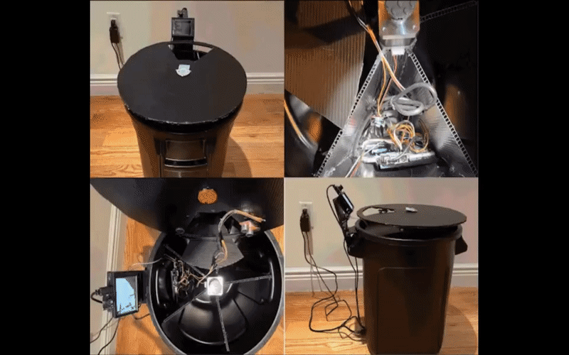
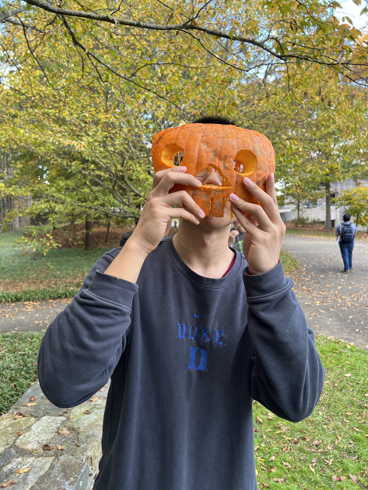

Hi there! 🤖
Yixuan Yang | 杨一轩 (YeungYathin)
Ph.D. Student,
Electrical and Computer Engineering,
Duke University
Linkedin / Github / Google Scholar / X (Twitter) / CV
Hi there from Yixuan! I am a Ph.D. student in the Department of Electrical and Computer Engineering at Duke University. During my first year at Duke, I was fortunate to be a member of the General Robotics Lab (GRL) and was advised by Professor Boyuan Chen. I am interested in Contact-Rich Robotic Manipulation in Dynamic Environments driven by advanced AI algorithms, Humanoid Robot, Reinforcement Learning, Collaborative Robots, and Combinatorial Optimization Problems. My research aims to truly unlock the potential of robotic intelligence — enabling robots to become genuinely autonomous embodied-AI agents that enhance and enrich human life 🤖🦾.
I received my Bachelor's degree in Computer Science from Southern University of Science and Technology in Shenzhen, China. During my undergraduate studies, I was proud and fortunate to be supervised (Academic Advisor) by Professor Xin Yao (Fellow, IEEE). In my junior and senior years, I had the opportunity to be a visiting student in Professor Xinlei Chen's research group at Tsinghua University (Tsinghua University - UC Berkeley Research Institute).
Highlights
Automatic sim scene generation.
Retrieve objects without vision.
Meta-control dynamic grasping.
News
- [2024-06] The paper "Dynamic Grasing with a Learned Meta-Controller" got accepted to IEEE CASE 2024!
- [2023-08] Started my Phd journey at Duke!!
- [2023-02] I was granted the Master of Science Award of Excellence by Columbia University.
- [2022-11] The paper "Dynamic Grasping with a Learned Meta-Controller" won NeurIPs Registration Award at 5th Robot Learning Workshop of NeurIPs 2022.
- [2022-05] I joined Kodiak Robotics as a deep learning intern mentored by Dr. Collin Otis.
- [2022-05] I was honored as M.S. EE Honors Student at Columbia University!
- [2021-09] I started my master's study at Columbia University, majoring in Electrical Engineering - Data Driven Analysis and Computation.
- [2021-01] I received Rice ECE Future Star Scholarship!
- [2020-10] The paper "Path Planning with Autonomous Obstacle Avoidance..." got accepted to IEEE CNSC 2020.
- [2020-06] I graduated from Nanjing Normal University and honored as Outstanding Graduated Student (5%).
- [2020-01] The paper "An UAV Wireless Communication Noise Suppression Method..." got accepted to Radio Science.
- [2019-12] I joined Robot Learning and Control Group of Nanjing University as a research assistant.
- [2019-07] The paper "Study on the Influence of Electromagnetic Pulse..." got accepted to American Journal of Electrical and Electronic Engineering.
- [2019-06] The paper "Investigation on conducted EMI noise source..." got accepted to IET Power Electronics.
- [2018-12] I received the NARI Group Scholarship!
Publications
*: indicating equal contribution. You can also check my Google Scholar profile.
-
Conference on Robot Learning (CoRL) 2024
-
Preprint
-
Robot Learning Workshop at Neural Information Processing Systems (NeurIPS) 2022
IEEE International Conference on Automation Science and Engineering (CASE) 2024
🏆 NeurIPs Registration Award


-
 Investigation on conducted EMI noise source impedance extraction for electro magnetic compatibility based on SP-GA algorithmIET Power Electronics[Paper]
Investigation on conducted EMI noise source impedance extraction for electro magnetic compatibility based on SP-GA algorithmIET Power Electronics[Paper]
-
 Study on the Influence of Electromagnetic Pulse on UAV Communication LinkAmerican Journal of Electrical and Electronic Engineering[Paper]
Study on the Influence of Electromagnetic Pulse on UAV Communication LinkAmerican Journal of Electrical and Electronic Engineering[Paper]
Projects

Adaptive grasp in dynamic environments.

Hyperbolic model for object detection.

Citi-Bin: An intelligent garbage bin.
- Adaptive grasp in dynamic environments (COMS6998-5 Robotic Learning Course Project) - advised by Professor Shuran Song
- Hierachical object detection (COMS6998-1 Representation Learning Course Project) - advised by Professor Carl Vondrick
- Learning the Predictability of the Future (EECS6691 Advanced Deep Learning Course Project) - advised by Professor Zoran Kostić
Teaching
Teaching assistant at Nanjing Normal University for:
- Microcomputer Principles and Interface Technology - Fall 2019
Talks
- Poster presentation at Northeast Robotics Colloquium (NERC) 2022 - October 8 · UMass Lowell
Lifestyle
I always enjoy my everyday life!

Duke Halloween.
2023.11, Duke University.

Last play in Levien Gym :(.
2022.12, Columbia.

Columbia Boat Cruise Social.
2022.09, Columbia.

Shoot like him.
2022.08, Los Angeles.